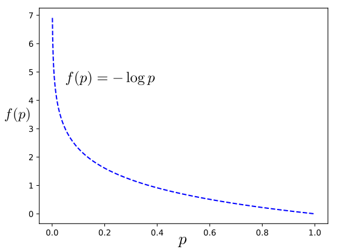

3. 信息熵¶
信息熵是一种衡量信息不确定的数学工具，是信息论的核心概念。信息熵由C.E.Shannon在1948首次提出，其发表的论文“A Mathematical Theory of Communication“中详细描述了信息与冗余的关系，借助热力学“熵”的概念，把信息中排除了冗余后的平均信息量称为“信息熵”，并给出了信息熵的数学表示。
3.1. 信息量¶
一般来说，一个信息发送源送出的信号是具有不确定性的。一个信号的不确定性可以根据信号出现的概率来度量，即概率越大出现机会越多，不确定性就越小；反之不确定性就越大。因此，不确定性函数\(f\)应该满足输入为概率(\([0,1]\))，输出为\([0,+\infty]\)。此外，对于多个独立信号的不确定性函数发，我们还需要考虑信号不确定性的可加性，即\(f(A\cap B)=f(A)+f(B)\)。同时满足这两个条件的函数，可以考虑对数函数，即
函数图像如下图所示：

现对这个不确定性函数进一步加以定义，并赋予一个新的名称为自信息。对于一个事件（信号）\(X=x\)，其发生概率为\(p(x)\)，则其自信息为，
很明显，事件发生的概率越大，不确定性越小，所含的信息量越少；反之，越多。符合不确定性函数的要求。
3.2. 信息熵¶
一个信号系统有若干信号发送，那么整个信号源的平均不确定性如何度量呢？若所有信号相互独立，则可以考虑所有信号的不确定性度量值的加权平均值，该值即为信息熵。
定义（信息熵）. 给定离散随机变量\(X\)，则\(X\)的信息熵为，
信息熵的非负性：信息熵一定是大于等于0的，即\(H(X)\ge 0\)。
定义（联合熵）. 给定离散随机变量\(X，Y\)，其联合分布为\(p(x,y)\)，则\(X,Y\)的联合熵为，
定义（条件熵）. 给定离散随机变量\(X，Y\)，其联合分布为\(p(x,y)\)，则条件熵\(H(Y|X)\)为，
定义（交叉熵）. 给定离散随机变量\(X\)，若有两人个分布分为\(p(x),q(x)\)，则交叉熵为，
定义（相对熵）. 给定离散随机变量\(X\)，若有两人个分布分为\(p(x),q(x)\)，则相对熵\(D_{KL}(p||q)\)为，
注意：不对称性\(D_{KL}(p||q)\neq D_{KL}(q||p)\)。
定义（互信息）. 给定离散随机变量\(X,Y\)，其联合分布为\(p(x,y)\)，则互信息为，
3.3. Python代码¶
# -*- coding: utf-8 -*-
import numpy as np
from numpy import matlib
from scipy.stats import entropy
# 互信息
def mutual_info(pxy):
if(pxy.ndim != 2):
raise Exception("pxy.ndim != 2")
Hx=H(pxy.sum(axis=1))
Hx_y=cdH(pxy)
return Hx-Hx_y
#自信息
def I(px):
if px>1:
return None
return -np.log(px)
#信息熵H(p)
def H(pk):
# check prob.
if np.sum(pk) < 1:
return None
return -np.sum(pk*np.log(pk))
#条件熵 H(X|Y)
def cdH(pxy):
if(pxy.ndim != 2):
return None
py=pxy.sum(axis=0)
py_rep=np.matlib.repmat(py,pxy.shape[0],1)
px_y = pxy/py_rep #condition prob.
return -np.sum( pxy*np.log(px_y))
#联合熵
def jointH(pxy):
if(pxy.ndim != 2):
return None
return -np.sum(pxy*np.log(pxy))
#KL
def KL(p,q):
if(len(p) != len(q)):
raise Exception("len(p) != len(q)")
return np.sum(p*(np.log(p)-np.log(q)))
#交叉熵
def cross_entropy(p,q):
if(len(p) != len(q)):
raise Exception("len(p) != len(q)")
return -np.sum(p*np.log(q))
if __name__=='__main__':
p=np.array([0.65,0.25,0.07,0.03])
q=np.array([0.6,0.25,0.1,0.05])
ent=entropy(p)
ent2=H(p)
print('熵1：H(X)',ent)
print('熵2：H(X)',ent2)
pxy=np.array([[0.84,0.03,0.02,0.01],
[0.06,0.01,0.008,0.002],
[0.01,0.005,0.004,0.001]])
print('条件熵H(X|Y)：\t',cdH(pxy))
print('联合熵H(X,Y)：\t',jointH(pxy))
print('KL散度1 D(p||q)：\t',KL(p,q))
print('KL散度2 D(p||q)：\t',entropy(p,q))
print('交叉熵cross_entropy(p,q)：\t',cross_entropy(p, q))
print('互信息I(X,Y)：\t',mutual_info(pxy))